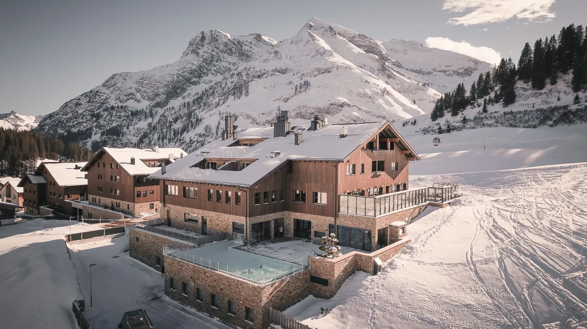
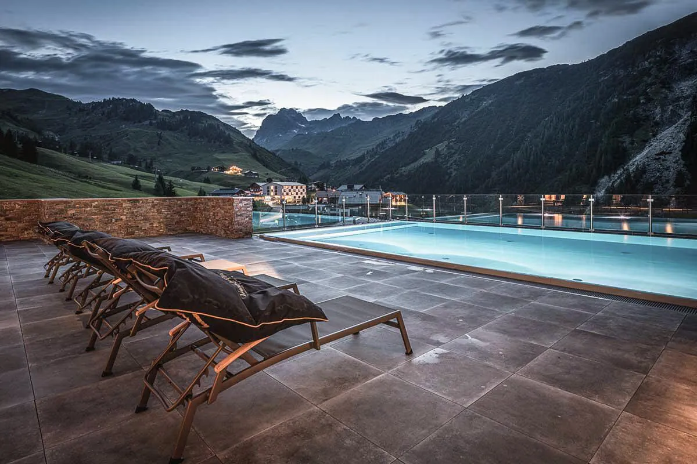
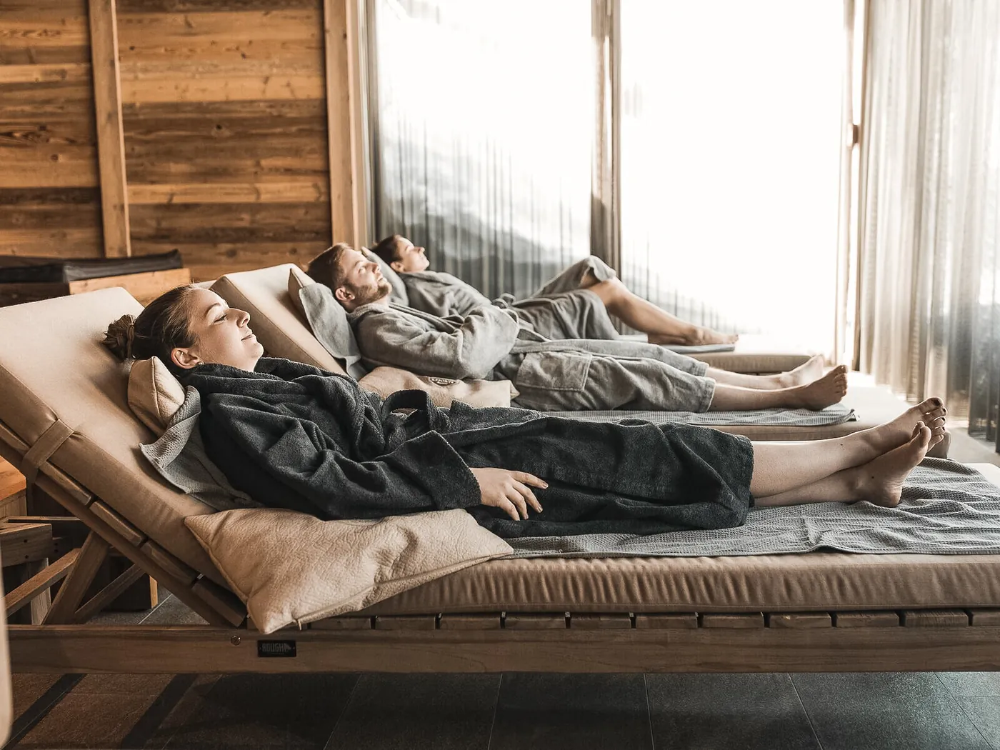

AlpenParks Arlberg
€6,688total · €159 / person/night
⛷ Ski accessSki-in/out advertised · Dorfbahn beside hotel
♨ WellnessOutdoor infinity pool 28–29°C, sauna, steam
🛏 SleepingApartment category and beds NOT confirmed
🍽 EveningsRestaurants and a few pubs nearby; quiet evenings
Verdict Best value if the apartment has six proper beds and the deposit is secured.
Check before choosing Deposit €1,962.30 requested by ~17 Nov. Confirm apartment category and beds before paying.
Property details ↗